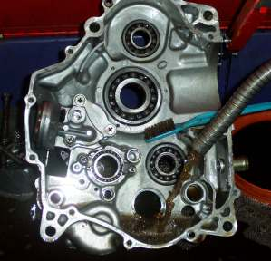
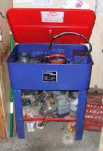
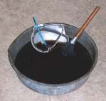
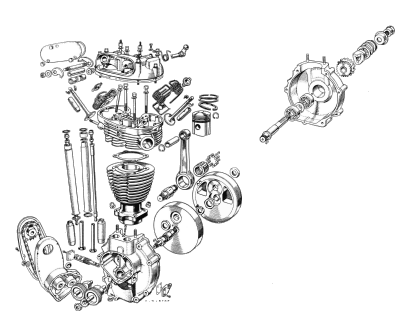
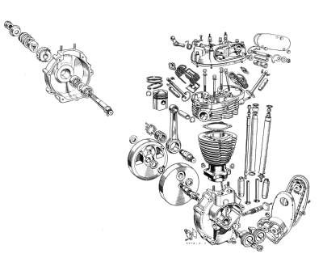

¶




Cleaning parts. It has to be done but nobody likes to do it. Even if we don't like to do it, we can at least do it safely. Seems like every year I read about someone lighting themselves off cleaning parts with gasoline. NEVER use gasoline to clean parts. To clean parts we use Petroleum Solvent. Petroleum Solvent works every bit as good as gasoline but without the danger. You can buy it in five gallon containers from an auto parts store or a fuel oil distributor.A large parts washer is nice to have because they usually have a pump to direct a stream of solvent onto your parts but a large pan will work too. You will also need a stiff bristle brush and an old tooth brush. Now dip the dirty part in the solvent and scrub off all the dirt with the brushes.

To keep my solvent clean, I like to clean most of the dirt off with an engine cleaner like GUNK. I usually do this with the engine still in the frame. Squirt the gunk on, work it in with a brush and then hose it off with water. This will get 95% of the dirt off. I then do the detail cleaning with Solvent.
After cleaning you can just set the part on some paper towels to dry or blow it off with compressed air. If you use compressed air, do not allow bearings to spin uncontrollably. This will danage the bearing.
Soap based cleaners like Gunk combine with the oily dirt and allow it to be soluable with water. A spray of water then removes all the dirt. These work pretty good but if you use them on steel, internal, engine parts and don't get all the water off, the parts will rust. Therefore I prefer to clean the outside of an engine with Gunk and the inside with solvent.

 |
 |
Copyright © 1999-2006 dansmc.com. All rights reserved.